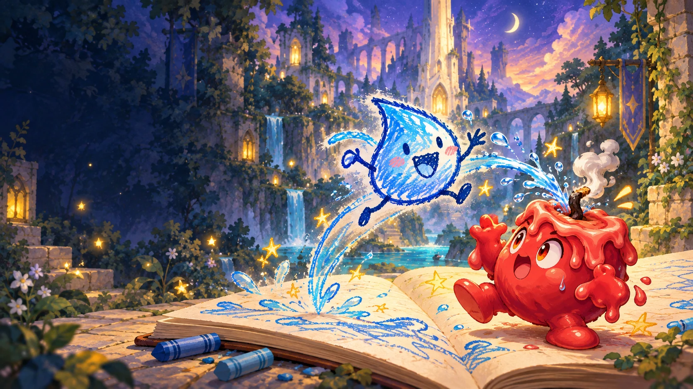
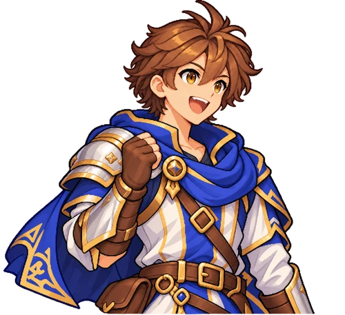
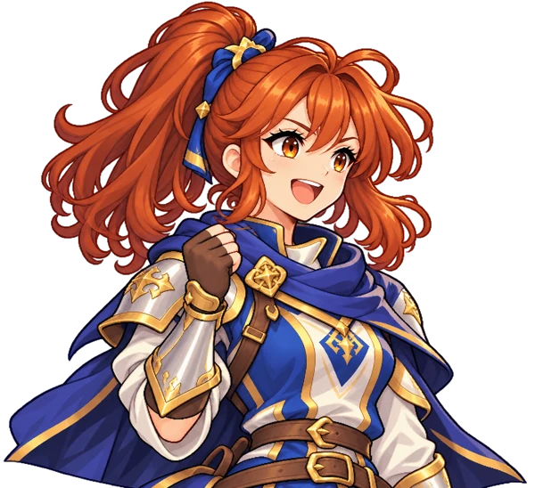

와! 내 불꽃이 꺼졌어!
와! 내 불꽃이 꺼졌어!당신의 동반자가 목소리를 찾는다.
당신의 그림은 이름과 특별한 움직임을 영감을 줍니다. 단어들은 전투를 생생하게 만듭니다: 적들은 아이디어가 작동할 때 반응하고, 다른 아이디어가 작동하지 않은 이유를 볼 수 있습니다.

당신의 아이디어로 만들어진 그림 모험
물로 만든 몸체는 불꽃을 꺼뜨릴 수 있습니다. 상대방을 보세요. 답을 그려보세요. 당신의 다우드는 모험의 동반자가 됩니다.
개발 중 · iPhone / iPad

당신의 동반자와 함께 모험을 떠나자!
홍보 일러스트
SCROLL TO PLAY↓01영웅과의 첫걸음
적을 살펴보세요. 아이디어를 그려보세요. 앱에서 동료를 생생하게 구현하세요. 동일한 128 × 128 그리드 그리드로 여기서 시작하세요.
그리기 · + / −로 확대 · 손을 사용하여 이동하기

여기에서 PNG를 그리기 및 저장하세요. 앱에서 그림을 생동감 있게 만들고 함께 싸워보세요!
PNG 수출: 1024 × 1024. 128 × 128 픽셀이 흐릿함 없이 8배 확대되었습니다.

03앱에서 그것을 생생하게 만들어라
앱에서 “동반자를 생생하게 만들기”를 탭하여 이름을 확인하고 특별한 능력을 알아보세요. 영웅이 당신을 응원하는 가운데, 당신의 아이디어를 전투에 투입하세요.
당신의 물 동반자는 불꽃을 이길 수도 있고, 물과 싸우기도 합니다. 관찰하세요. 다시 그려보세요. “이걸 해보면 어떨까?”라는 그 작은 순간이 바로 재미입니다.
02오십층. 당신만의 이야기.
숲속 통로에서 수정 홀까지, 구름 위 정원과 별의 도서관까지. 동반자와 함께 블랭크 타워를 오르고 50명의 수호자들을 만나보세요.


03BEYOND THE BATTLE
와! 내 불꽃이 꺼졌어!당신의 그림은 이름과 특별한 움직임을 영감을 줍니다. 단어들은 전투를 생생하게 만듭니다: 적들은 아이디어가 작동할 때 반응하고, 다른 아이디어가 작동하지 않은 이유를 볼 수 있습니다.


그림을 다시 그리시고 다시 시도하세요. 당신의 동료들은 도서관에 머물러 있으므로 다양한 아이디어를 계속 탐색할 수 있습니다.
아이디어가 잘 될 때 함께 축하하세요. 잘 되지 않을 때는 새로운 접근 방식을 생각해 보세요. 영웅은 당신이 그려낸 동료를 계속 응원합니다.
QUESTIONS & ANSWERS
개발 중 · iPhone / iPad
iOS 또는 iPadOS 27 이상, Apple Intelligence가 활성화된 iPhone 또는 iPad와 이미지 입력을 지원하는 모델이 필요합니다.
드라몬은 개발 중이며 출시를 준비하고 있습니다. 앱 스토어 출시일은 준비가 완료되면 발표될 예정입니다.
이것은 그림 대회는 아닙니다. 도형, 도구 및 재료는 당신의 아이디어를 전달하는 데 도움이 됩니다. 상대방을 보고 실험해 보세요.
앱은 장치에 그림과 모험을 저장합니다. 자동 저장 기능과 수동 북마크 세 가지가 있습니다. 광고 및 구매에는 인터넷 연결이 필요합니다.
이 웹사이트는 16가지 언어와 표기로 제공됩니다. 앱의 기본 지원 언어는 일본어와 영어이며, 14가지 추가 언어는 개발용 미리보기로 준비 중입니다.
그림을 그리고 다시 그리는 것은 무료입니다. 광고를 시청하여 저장된 동반자를 소환한 후, 함께 해당 바닥을 다시 시도하세요. 일회성 구매를 하면 광고가 제거됩니다.
DRAWMON SUPPORT
문제 신고, 질문하기 또는 게임에 대한 아이디어를 공유하세요.
버그 보고서를 작성할 때는 단계, 게임 버전, 기기 및 OS 버전을 포함하십시오.
GitHub 계정이 필요합니다. 게시물은 공개됩니다. 성함이나 이메일 주소와 같은 개인 정보를 포함하지 마세요.